| Menu
Ferramentas |
|
Essa ferramenta
permite reproduzir
o voo através da representação da simbologia dos principais displays de uma aeronave de combate
moderna.
A ferramenta
usa como base a
aparência e a simbologia dos displays
da aeronave F-5M, mas pode ser utilizada para qualquer aeronave.
Os seguintes
displays são
reproduzidos:
- HUD
(Head-Up Display);
- TSD (Tactical Situation Display); e
- Indicadores de motores e comandos de voo; e
Clique em
“Ferramentas ► Reprodução do voo” ou no botão na
Barra de Ferramentas.
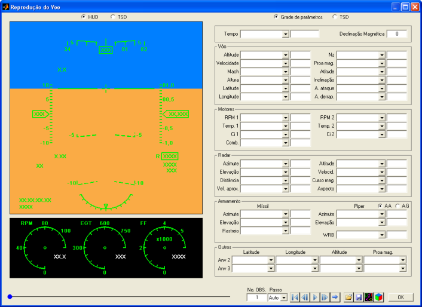
|
Nota: A ferramenta
requer resolução mínima de 1024 × 768
pixels e não executará em resoluções menores. |
Descrição
e Operação
A tela
principal da ferramenta é
composta de duas áreas principais, uma à esquerda e outra à direita, e
de uma
área de controles na parte inferior.
A tela inicial
apresenta o HUD e indicadores
de motores e comandos de voo à esquerda e a grade de parâmetros à
direita.
Para selecionar
o conteúdo das áreas
principais (esquerda
e direita) use os seletores acima de cada tela.
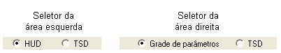
- Na área principal esquerda é possível selecionar o HUD e
indicadores
de motor e comandos de voo ou o TSD.
- Na área principal direita é possível selecionar a grade de parâmetros ou o TSD.
- O painel de alarmes é sempre apresentado no meio da tela, na parte inferior.
Controles
Na parte
inferior da tela estão
localizados os controles da ferramenta:
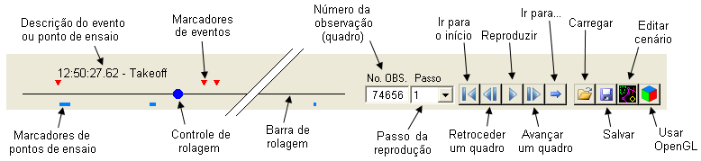
A barra de rolagem é uma linha que representa todo o intervalo de tempo dos dados. As seguintes informações são apresentadas na barra de rolagem:
- Controle de rolagem (círculo azul): indidica a posição atual da reprodução;
- Marcadores de eventos (triangulos vermelhos): indicam as posições dos eventos na linha do tempo; e
- Marcadores de pontos de ensaio (barras azuis): indicam as posições e a duração dos pontos de ensaio na linha do tempo.
Ao posicionar o cursor sobre um marcador de evento ou ponto de ensaio, sua descrição será apresentada acima da barra de rolagem.
Durante a reprodução do voo, a descrição do evento aparece por um segundo no canto superior esquerdo do HUD, e a descrição dos pontos de ensaio aparece enquanto durar o ponto.
A barra de rolagem permite deslocar a reprodução no tempo de diferentes formas:
- Arraste o controle até a posição desejada;
- Clique sobre a barra de rolagem à esquerda ou direita do controle para retroceder ou avançar 10 passos (depende da seleção do campo "Passo");
-
Clique diretamente sobre o evento ou ponto de ensaio desejado.
A barra de rolagem pode ser dividida em 2, 4 ou 8 trechos. Para isso, clique com o botão direito sobre a barra de rolagem e escolha a opção desejada:
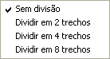
Em caso de divisão em 2 ou mais trechos, o início e o término do trecho atual serão exibidos nas extremidades da barra de ferramentas, em formato fracionário.
O exemplo abaixo mostra como seria a exibição do 2º trecho em caso de 4 divisões:
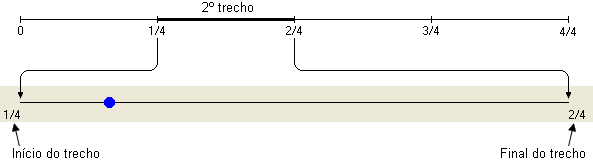
|
Nota: O tamanho mínimo de cada trecho é de 100 observações. |
O campo “No.
OBS.” indica o
número da observação atual (quadro) e acompanha o indicador da barra de
rolagem. É possível inserir diretamente no campo o quadro desejado e
pressionar “Enter”.
O campo “Passo”
permite
selecionar a velocidade da reprodução. As opções são: -20, -10, -5, -2,
-1,
-0.5, -0.2, -0.1, 0.1, 0.2, 0.5, Auto, 1, 2, 5, 10 e 20.
O valor
unitário exibe todos os
quadros sequencialmente, valores maiores que 1 pulam quadros e valores
menores
que 1 repetem quadros. Os valores negativos seguem a mesma lógica, mas
fazem a
reprodução retroceder.
|
Nota: Passos diferentes de "Auto" não apresentam
correlação entre a velocidade de reprodução
e o parâmetro “Tempo”, sendo que a taxa de quadros dependerá
exclusivamente da capacidade de processamento do computador. |
O passo automático calculado e a taxa de quadros atual é apresentada no canto inferior direito da tela:
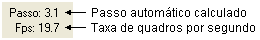
Os botões
de controle permitem
controlar a reprodução dos dados. É possível realizar as seguintes
ações:
Para retornar
para o início dos dados, clique no botão .
Para retroceder
um passo, clique
no botão .
Para iniciar a
reprodução com o
passo selecionado, clique no botão ou clique sobre o HUD. O
botão permanecerá pressionado durante a reprodução.
Para parar a
reprodução, clique
novamente no botão ou sobre o HUD. O
botão ficará despressionado.
Para avançar um passo, clique no botão .
Para ir até um
tempo, evento ou ponto de ensaio específico, clique no botão .
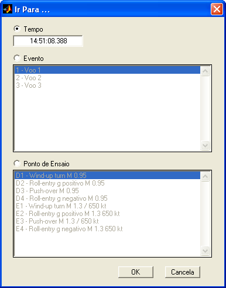
Ao clicar "OK", a reprodução será deslocada diretamente para o instante desejado.
Os botões
de ferramentas
permitem realizar as seguintes ações:
Para carregar
uma configuração de
parâmetros e/ou um cenário tático, clique no botão ,
localize o arquivo .mat
desejado e clique “Abrir”.
Caso o arquivo
contenha
configuração e cenário, o usuário deverá informar o que deseja carregar.
Selecione os
componentes desejados
e clique “OK” para carregá-los.
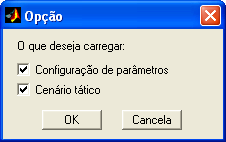
Para salvar a
configuração de
parâmetros atual e/ou o cenário tático, clique no botão .
Selecione os
componentes
desejados, clique “OK”, indique um arquivo .mat
e
clique “Salvar” para salvá-los.
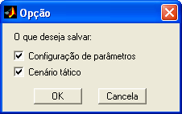
Para abrir o Editor
de Cenários,
clique no botão 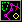
|
Nota: O cenário carregado ou definido pelo usuário durante a execução da ferramenta é lembrado pelo R_DAT nas chamadas subsequentes da ferramenta e salvo com o arquivo de matrizes de trabalho. |
Para habilitar o renderizador de vídeo OpenGL, clique no botão .
Essa opção pode acelerar significativamente a taxa de quadros, em especial quando há mapas carregados no cenário. Além disso, apenas nesse modo mapas com transparência são apresentados corretamente.
Grade
de Parâmetros
A grade de parâmetros é usada para indicar os parâmetros das matrizes de trabalho necessários à reprodução dos displays, e também para o monitoramento dos valores numéricos de cada parâmetro ao longo da reprodução, que são agrupados por sistema.
Se a grade não
couber inteiramente na tela, uma barra de rolagem vertical será
apresentada em sua borda direita.
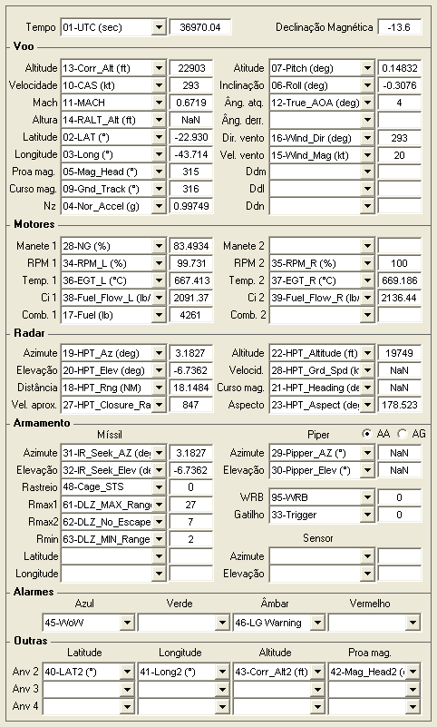
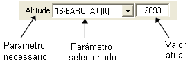
Para a completa
reprodução dos displays, é
necessário indicar corretamente
os parâmetros listados abaixo, nas unidades adequadas.
Os parâmetros
que não forem
indicados na grade serão omitidos da simbologia, exceto os parâmetros
altitude,
proa, atitude longitudinal, inclinação lateral e ângulo de derrapagem,
aos quais será atribuído o valor zero.
|
Grupo |
Parâmetro |
Descrição |
Unidade |
|
| - |
Tempo |
Tempo
de
referência |
s |
|
| Voo |
Altitude |
Altitude
pressão ou geométrica da aeronave |
ft |
|
| Velocidade |
Velocidade
da
aeronave (indicada, calibrada ou verdadeira) |
kt* |
||
| Mach |
Número
de Mach
da aeronave |
- |
||
| Altura |
Altura
da
aeronave com relação ao terreno |
ft* |
||
| Latitude |
Latitude
da
aeronave |
graus |
||
| Longitude |
Longitude
da
aeronave |
graus |
||
| |
|
graus | ||
| |
|
graus | ||
| |
|
|
||
| Atitude |
Atitude
longitudinal da aeronave (positiva a cabrar) |
graus | ||
| Inclinação |
Inclinação
lateral da aeronave (positiva à direita) |
graus | ||
| Âng.
atq. |
Ângulo
de
ataque da aeronave (positivo para baixo) |
graus | ||
| Âng. derr. |
Ângulo
de
derrapagem da aeronave (positivo à direita) |
graus | ||
| Dir. vento |
Direção magnética de
onde vem o vento |
graus |
||
| Vel. vento |
Velocidade do
vento |
kt* |
||
| Ddm |
Deflexão do
comando longitudinal (positiva a cabrar) |
% | ||
| Ddl |
Deflexão do comando lateral (positiva à direita) | % | ||
| Ddn |
Deflexão do comando direcional (positiva à direita) | % | ||
| Motor |
Manete 1 |
Posição da
manete do
motor 1 |
% |
|
| Manete 2 |
Posição da manete do motor 2 | % |
||
| RPM
2 |
Rotação
do
motor 2 |
%* |
||
| RPM
2 |
Rotação
do
motor 2 |
%* |
||
| Temp.
1 |
Temperatura
do
motor 1 |
°C* |
||
| Temp.
2 |
Temperatura
do
motor 2 |
°C* |
||
| Ci
1 |
Consumo
instantâneo do motor 1 |
lb/h* |
||
| Ci
2 |
Consumo
instantâneo do motor 2 |
lb/h* |
||
| Comb. 1 |
Quantidade
de
combustível do tanque 1 |
lb* |
||
| Comb. 2 |
Quantidade
de
combustível do tanque 2 |
lb* |
||
| Radar |
Azimute |
Azimute
do alvo
no sistema do corpo (positivo à direita) |
graus | |
| Elevação |
Elevação
do
alvo no sistema do corpo (positivo para cima) |
graus | ||
| Distância |
Distância
do
alvo |
NM |
||
| Vel.
aprox. |
Velocidade
de
aproximação do alvo |
kt* |
||
| Altitude |
Altitude
do alvo |
ft |
||
| Velocid. |
Velocidade
do
alvo (indicada, calibrada ou verdadeira) |
kt* |
||
| Curso
mag. |
Curso
magnético
do alvo |
graus |
||
| Aspecto |
Ângulo
de
aspecto do alvo |
graus |
||
| Armamento |
Míssil |
Azimute |
Azimute
do
sensor do míssil no sistema do corpo (positivo à direita) |
graus |
| Elevação |
Elevação
do
sensor do míssil no sistema do corpo (positivo para cima) |
graus | ||
| Rastreio |
Indica
se o
míssil está rastreando um alvo autonomamente (tracking) |
0 / 1 | ||
| Rmax1 |
Alcance máximo do míssil para alvo em voo retilíneo | NM | ||
| Rmax2 |
Alcance máximo do míssil para alvo em manobra evasiva | NM | ||
| Rmin |
Alcance mínimo do míssil | NM | ||
| Latitude |
Latitude do míssil em voo | graus | ||
| Longitude |
Longitude do míssil em voo | graus | ||
| Piper |
Azimute |
Azimute
do
piper no sistema do corpo (positivo à direita) |
graus | |
| Elevação |
Elevação
do
piper no sistema do corpo (positivo para cima) |
graus | ||
| WRB |
Acionamento
do
botão de soltura de armamento |
0
/ 1 |
||
| Gatilho |
Acionamento do gatilho | 0 / 1 | ||
| Sensor |
Azimute |
Azimute
do
sensor secundário no sistema do
corpo (positivo à
direita) |
graus | |
| Elevação |
Elevação
do sensor
secundário no sistema do
corpo (positivo p/
cima) |
graus | ||
| Alarmes |
Azul | Alarme 1 | 0 a 99 | |
| Verde | Alarme 2 | 0 a 99 | ||
| Âmbar | Alarme 3 | 0 a 99 | ||
| Vermelho | Alarme 4 | 0 a 99 | ||
| Outras |
Anv
2 Anv 3 Anv 4 |
Latitude | Latitudes das aeronaves 2, 3 e 4 | graus |
| Longitude | Longitudes das aeronaves 2, 3 e 4 | graus | ||
| Altitude | Altitudes das aeronaves 2, 3 e 4 | ft | ||
| Proa mag. | Proas magnéticas das aeronaves 2, 3 e 4 | graus | ||
* Unidades
usuais, mas não
mandatórias.
A configuração
dos parâmetros pode
ser carregada através do botão e salva em arquivo .mat
através do botão .
|
Nota: A configuração carregada ou definida pelo usuário durante a execução da ferramenta é lembrada pelo R_DAT nas chamadas subsequentes da ferramenta e salva com o arquivo de matrizes de trabalho. |
Para a correta reprodução do TSD, a declinação magnética local deve ser indicada na grade de parâmetros, no campo “Declinação Magnética” (em graus, positivo para leste). A declinação pode ser inserida manualmente no campo correspondente ou calculada pelo R_DAT. Clique com o botão direito do mouse sobre o nome ou o campo "Declinação magnética" e escolha o método desejado:
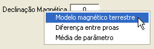
- Modelo magnético terrestre: Calcula a declinação magnética a partir do modelo teórico fornecido pela NOAA ("National Oceanic and Atmosferic Administration"), baseado na data do voo, no ponto médio das coordenadas do voo e na altitude média do voo.
- Diferença entre proas: Calcula a declinação magnética a partir da diferença média entre os parâmetros de proa verdadeira e proa magnética.
- Média de parâmetro: Calcula a declinação magnética pela média de um parâmetro contendo a declinação magnética ao longo do voo.
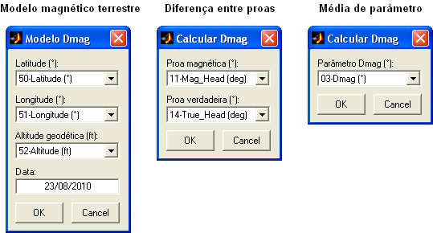
A declinação
magnética
faz parte do cenário e é salva com o mesmo.
HUD
Essa janela
reproduz a simbologia principal
do HUD da aeronave F-5M e o horizonte terrestre do ponto de vista do
piloto,
apresentando os parâmetros de voo, do alvo primário do radar e do
sistema de
armamento. O campo de visão tem uma abertura total de 20 a 60°
(horizontal e
vertical) e está orientado para frente da aeronave, 3° abaixo da linha
de
referência. Clique
nos botões  e
e  no canto superior esquerdo do HUD para
aumentar ou diminuir o campo de visão de 10 em 10 graus.
no canto superior esquerdo do HUD para
aumentar ou diminuir o campo de visão de 10 em 10 graus.
A figura abaixo
apresenta um
exemplo contendo toda a simbologia.
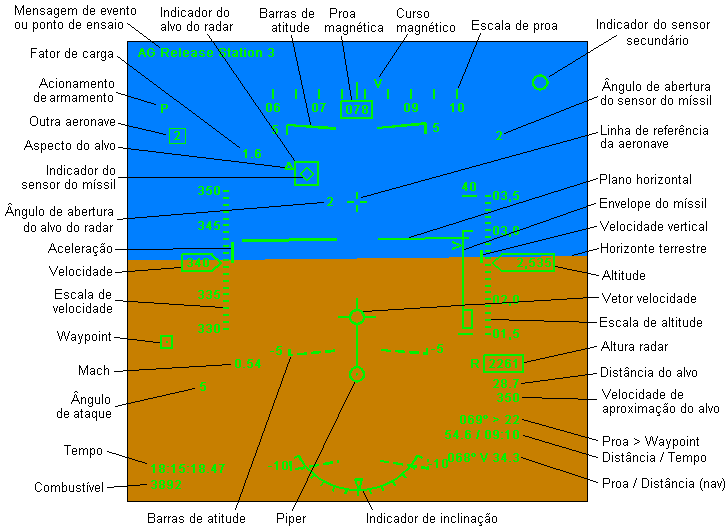
A reprodução do
HUD contém os
seguintes símbolos:
|
Símbolo |
Descrição |
|
Linha de
referência da aeronave |
Esse símbolo
representa a projeção da linha de referência da aeronave, que define os
ângulos de atitude longitudinal, ataque e derrapagem. Nessa reprodução,
ela também representa a linha de referência do visor, do radar e do
armamento (míssil e piper). O símbolo também é chamado de "cruzeta". |
|
Plano horizontal |
Representa o
plano horizontal no sistema terrestre móvel, e constitui a linha de
atitude zero da aeronave. |
|
Horizonte
terrestre |
Representa o
horizonte terrestre visto pelo piloto, dividindo o céu (azul) e o
terreno (laranja). Essa linha difere do plano horizontal em função da
altura da aeronave, que causa um aparente deslocamento para baixo no
horizonte terrestre. |
|
Barras de
atitude |
Linhas
paralelas ao plano horizontal com 5 graus de espaçamento. As linhas de
atitude positiva são cheias, enquanto que as negativas são tracejadas.
As linhas têm um ângulo de apontamento em direção ao horizonte e
legendas nas laterais, indicando o ângulo de atitude em graus. |
|
Indicador de
inclinação |
Indica a
inclinação lateral da aeronave em uma escala em forma de arco no
intervalo de -60 a +60 graus. |
|
Vetor velocidade |
Símbolo que indica a direção da velocidade da aeronave. Se forem indicados os ângulos de ataque e derrapagem com relação à linha de referência da aeronave, o símbolo representará o vetor velocidade aerodinâmica. Se forem
indicados os ângulos de depressão e azimute do
indicador de trajetória ("flight path marker"), o símbolo representará
o vetor velocidade com relação ao solo. |
|
Indicador de
velocidade |
Apresenta a
velocidade da aeronave, sem casas decimais, com uma escala dinâmica ao
fundo. |
|
Indicador de
aceleração |
Apresenta a
aceleração da aeronave, em nós por segundo (cada divisão da escala
dinâmica). |
|
Indicador de
altitude |
Apresenta a
altitude da aeronave, sem casas decimais, com uma escala dinâmica ao
fundo. |
|
Indicador de
velocidade vertical |
Apresenta a
velocidade vertical da aeronave, em milhares de pés por minuto (cada
divisão da escala
dinâmica). |
|
Indicador de
proa |
Apresenta a
proa magnética da aeronave em graus, sem casas decimais, com uma escala
dinâmica ao fundo. |
|
Indicador de
curso |
Apresenta o curso magnético da aeronave sobre a escala dinâmica de proa. |
|
Indicador de
altura radar |
Apresenta a
altura da aeronave com relação ao terreno, sem casas decimais. |
|
Indicador de
Mach |
Apresenta o
número de Mach da aeronave, com duas casas decimais. |
|
Indicador de
fator de carga |
Apresenta o
fator de carga normal da aeronave, com uma casa decimal. |
|
Indicador de
ângulo de ataque |
Apresenta o
ângulo de ataque da aeronave, sem casas decimais. |
|
Indicador
distância do alvo |
Apresenta a
distância do alvo primário do radar, com uma casa decimal. |
|
Indicador
velocidade de aproximação do alvo |
Apresenta a
velocidade de aproximação do alvo primário do radar, sem casas decimais. |
|
Indicador de
tempo |
Apresenta o
tempo de referência no formato hh:mm:ss.ms. |
|
Indicador
de combustível |
Apresenta o
combustível remanescente (soma do combustível 1 com o 2), sem casas
decimais. |
|
Waypoint
selecionado |
Indica a posição do waypoint selecionado. |
|
Dados do waypoint
selecionado |
Apresenta as informações de navegação para o waypoint selecionado. Proa (graus) > Número do waypoint
Distância (NM) / Tempo para bloqueio |
|
Dados do auxílio à navegação selecionado |
Apresenta as informações de navegação para o auxílio à navegação selecionado (VOR, DME, NDB, Fixo, aeródromo).
Proa (graus) / Distância (NM) |
|
Piper |
Indica a posição prevista do ponto de impacto do armamento, calculado pela aeronave ou inserido pelo piloto. Há dois tipos de simbologia, apresentadas de acordo com a seleção próxima ao campo "Piper": AA (ar-ar): o piper é ligado por uma linha à cruzeta de atitude. AG (ar-solo):
o piper é ligado por uma linha ao vetor
velocidade. |
|
Indicador de acionamento de armamento |
Indica o
acionamento do botão de soltura de armamento ("P") e do gatilho ("T"). |
|
Indicador do
alvo do radar |
Indica a
posição do alvo primário do radar no HUD, com relação à linha de
referência da aeronave. Quando o alvo estiver fora do campo de visão do
HUD, o indicador ficará posicionado na borda do HUD, com um “X” sobre o
mesmo. |
|
Indicador do
ângulo de aspecto do alvo do radar |
Indica o ângulo
de aspecto do alvo primário do radar (como o alvo está sendo visto pelo
piloto). O triângulo é posicionado ao redor do indicador do alvo e
representa a cauda o alvo. Quando o alvo é visto por trás, o ângulo de
aspecto é zero e o triângulo é posicionado embaixo do indicador de
alvo. Quando o alvo é visto de frente, o ângulo é 180° e o triângulo é
posicionado |
|
Ângulo de
abertura do alvo do radar |
Indica o ângulo
entre o alvo do radar e a linha de referência da aeronave, sem casas
decimais. Só é apresentado quando alvo estiver fora do campo de visão
do HUD. |
|
Indicador do
sensor do míssil |
Indica a
direção de apontamento do sensor do míssil, com relação à linha de
referência da aeronave. Um símbolo pequeno indica míssil escravizado e
um símbolo grande indica míssil rastreando um alvo (não há distinção
entre os estados “caged”
e “uncaged”).
Quando o sensor estiver apontado para fora do campo de visão do HUD, o
indicador ficará posicionado na borda do HUD, com um “X” sobre o mesmo. |
|
Ângulo de
abertura do sensor do míssil |
Indica o ângulo
entre o sensor do míssil e a linha de referência da aeronave, sem casas
decimais. |
|
Envelope do
míssil |
Indica
o alcance cinemático do míssil através de dois "brackets". A marca
superior representa o alcance com o alvo em voo retilíneo (Rmax1), a
marca intermediária representa o alcance com alvo em manobra evasiva
(Rmax2) e a marca inferior representa o alcance mínimo (Rmin). O
símbolo ">" indica a posição atual do alvo no
envelope. A
escala é indicada no topo, em NM. |
|
Indicador do sensor secundário |
Indica a direção de apontamento do sensor secundário da aeronave (HMD, EO, LDP, IRST, etc.). Quando o sensor estiver fora do campo de visão do HUD, o indicador ficará posicionado na borda do HUD, com um “X” sobre o mesmo. |
|
Outras aeronaves |
Indica a posição relativa das aeronaves 2, 3 e 4, com a respectiva numeração. |
|
Mensagem de
evento ou ponto de ensaio |
Ao ocorrer um evento, apresenta sua descrição por um segundo. Durante um
ponto de ensaio, apresenta sua descrição enquanto durar o
ponto. |
Indicadores
de Motores e Comandos de Voo
Os indicadores de motor reproduzem os mostradores analógicos, ponteiros e indicações digitais dos principais parâmetros de motor. A aparência é semelhante aos indicadores da aeronave F-5M. São mostrados os parâmetros RPM (rotação), TEMP (temperatura em um ponto de interesse do motor) e FF (“fuel flow” - consumo instantâneo) de até dois motores.
Os indicadores de comandos de voo apresentam a posição de até duas manetes de potência e a posição dos comandos longitudinal, lateral e direcional.
A aparência
da janela
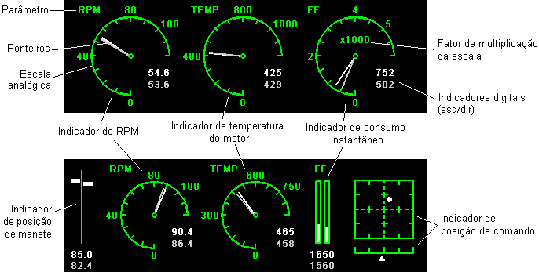
Os ponteiros e mostradores digitais dos dois motores são distinguidos, respectivamente, pelas cores branca e cinza.
Valores fora da escala são mostrados normalmente nos indicadores digitais, mas são saturados entre zero e o valor máximo nas escalas analógicas.
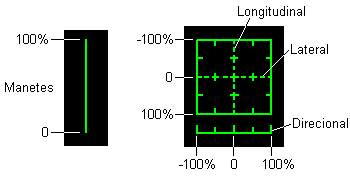
A amplitude da
escala analógica dos mostradores de RPM, TEMP e FF e
o divisor da escala podem ser definidos pelo usuário clicando-se com o
botão
direito
sobre cada mostrador e na opção “Ajustar escala”.
Na janela de
edição, indique o
valor máximo da escala (número maior que zero e divisível por 12) e o
divisor
da escala (1, 10, 100 ou 1000). O valor mínimo é sempre zero. A escala
analógica e as legendas serão apresentadas de acordo com os valores
indicados.
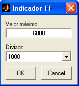
O usuário pode
usar esses indicadores
para visualizar outros parâmetros desejados, bastando alterar a seleção
dos
respectivos campos na grade de parâmetros e ajustar a escala.
O ajuste das escalas é salvo juntamente com a configuração de parâmetros.
Painel de Alarmes
O painel de alarmes apresenta até quatro alarmes de cores diferentes (azul, verde, âmbar e vermelho), na forma de "luzes" que se acendem quando o respectivo alarme é acionado.
O comportamento do painel de alarmes é o seguinte:
- Quando o parâmetro de alarme não está indicado na grade de parâmetros, a respectiva "luz" não é apresentada;
- Quando o valor do parâmetro é zero ou "NaN", a "luz" aparece apagada;
- Quando o valor do parâmetro é igual a 1, a "luz" aparece acesa;
- Quando o valor do parâmetro vai de 2 a 99, a "luz" aparece acesa com o número indicado em seu interior;
- Quando o valor do parâmetro é maior que 99, a "luz" aparece acesa com um "X" em seu interior;
- Valores negativos são descartados (a "luz" aparece apagada).
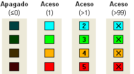
TSD
Essa janela
reproduz parte da
simbologia tática do TSD da aeronave F-5M, apresentando o cenário
(áreas de
voo, waypoints,
rotas, ameaças, mapa, etc), o
alvo primário do radar, a posição de até outras três aeronaves e
objetos auxiliares como órbitas, pontos, texto, rastro, entre outras. O
cenário é visto de cima, e a
escala pode
ser escolhida pelo usuário. A projeção cartográfica é do tipo
ortogonal, com
distâncias proporcionais nos dois eixos, planificando a região exibida.
A figura abaixo
apresenta um
exemplo com quase toda a simbologia:
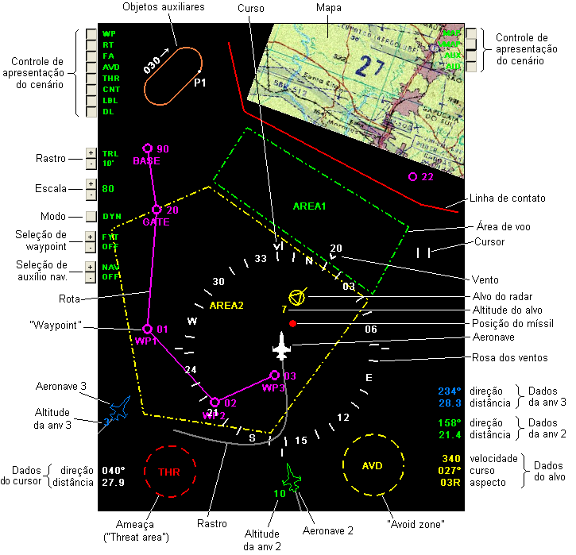
O TSD é
composto do cenário
tático, da simbologia da aeronave e do alvo, de auxílios e de controles.
O cenário
tático é composto
dos seguintes tipos de objeto:
|
Objeto |
Descrição |
Simbologia |
|
Mapa |
Imagem do tipo raster
com a representação gráfica do terreno (desenho ou foto de satélite). |
Imagem
retangular. |
|
Objeto
auxiliar |
Formas e textos
livres definidos pelo usuário, como auxílio ao cenário. |
Pontos, linhas, área ou texto, de diferentes cores e formas. |
|
Auxílio à navegação |
VOR, DME, NDB,
Fixos e aeródromos. |
Símbolos azuis. |
|
“Waypoint” |
Ponto de
controle e referência. |
Círculo magenta. |
|
Rota |
Rota de voo
unindo pontos de controle específicos. |
Série de retas
magentas. |
|
Área de voo |
Polígono que
define uma região específica do espaço aéreo. |
Polígono com
contornos coloridos e de diferentes estilos. |
|
“Avoid zone” |
Zonas que devem
ser evitadas. |
Círculo
tracejado amarelo. |
|
“Threat area” |
Áreas de
ameaças. |
Círculo
tracejado vermelho. |
|
Linha de contato |
Linha que
define uma fronteira tática. |
Série de retas
vermelhas. |
O cenário pode
ser carregado
através do botão ,
editado clicando-se no botão e salvo em arquivo .mat
através do botão .
Os parâmetros
que definem os objetos
do cenário são descritos no Editor
de Cenário.
- No modo fixo: deslocando-se livremente pelo cenário;
Para alterar a silhueta entre os modelos disponíveis, pause a reprodução, clique sobre o TSD e pressione o botão "asterisco" no teclado.
O alvo
primário do radar é
representado por um círculo amarelo posicionado relativamente à própria
aeronave.
Caso haja
informação de curso do
alvo, será acrescentado um triângulo no interior do círculo com uma das
pontas
projetada no sentido do curso.
Caso haja
informação de altitude
do alvo, será apresentada abaixo e à esquerda do alvo sua altitude em
milhares
de pés.
O míssil
em voo (após disparo) é
representado por um círculo vermelho cheio.
Até três outras
aeronaves
podem ser apresentadas no TSD simulando um "data-link", com
indicação de altitude em milhares de pés.
Caso o parâmetro de proa não esteja especificado, será mostrado apenas um círculo na posição da aeronave.
Uma rosa
dos ventos é
apresentada ao redor da aeronave e fornece sua orientação horizontal.
No modo
dinâmico, a rosa dos ventos gira ao redor da aeronave de acordo com sua
proa magnética,
e no modo fixo se mantém estática.
Cada divisão da
rosa dos ventos é
de 10 graus, e a cada 30 graus é apresentada uma legenda com os pontos
cardeais
(“N”, “S”, “E” e “W”) ou a direção em dezenas de graus.
O bloco
de dados do cursor é
apresentado no canto inferior esquerdo do TSD e
informa a direção (em graus magnéticos)
e a distância do cursor até a aeronave (em NM), quando o mesmo estiver
posicionado
sobre o TSD. O cursor é apresentado como duas barras horizontais
brancas quando
estiver sobre o TSD.
O bloco
de dados do alvo é
apresentado no canto inferior direito do TSD e
informa, caso houver, sua
velocidade, curso e ângulo de aspecto.
O ângulo de
aspecto do alvo é
apresentado em dezenas de graus seguido de uma letra que indica o lado
pelo
qual o mesmo é visto: “R” (direita) ou “L” (esquerda). Caso o alvo
esteja de
frente (180 ± 5°), é apresentada a letra “H” (“head”)
e, caso esteja de costas (0 ± 5°), a letra “T” (“tail”).
Os blocos
de dados das outras aeronaves são
apresentados no canto inferior direito do TSD e
informam, caso houver, a direção e a distância das outras
aeronaves para a aeronave principal.
O controle
de apresentação do
cenário (declutter)
é apresentado nos cantos superiores esquerdo e direito do TSD
e é usado para mostrar
ou
ocultar cada tipo de componente do cenário. Os botões adjacentes à
legenda
representam o estado da exibição de cada componente (pressionado mostra
e despressionado
oculta).
A legenda
representa os seguintes
componentes:
|
Legenda |
Componente |
|
WP |
“Waypoints” |
|
RT |
Rotas |
|
FA |
Áreas de voo |
|
AVD |
“Avoid zones” |
|
THR |
“Threat areas” |
|
CNT |
Linha de contato |
|
LBL |
Legendas dos
objetos do cenário |
|
DL |
Outras aeronaves (inclusive no HUD) |
|
MAP |
Mapas |
|
VMAP |
Mapas vetoriais
(reservado para uso futuro) |
|
AUX |
Objetos
auxiliares |
|
AID |
Auxílios à
navegação |
Obs.: Para se
obter uma taxa de quadros
por segundo adequada quando apresentando mapas no cenário, é
recomendado o uso
do renderizador OpenGL,
acionado pelo botão .
O controle
do rastro
é
apresentado abaixo do controle de apresentação do cenário e indica o
tamanho do rastro da aeronave, em segundos ou minutos. O rastro é
apresentado como uma linha cinza atrás da aeronave e é necessário que
haja um parâmetro de tempo selecionado na grade de parâmetros. O controle de
rastro possui dois
botões:  para
aumentar e
para
aumentar e  para
diminuir a duração do rastro. Os
valores disponíveis são: 0, 15, 30 e 60 segundos, 2, 5, 10 e 20 minutos.
para
diminuir a duração do rastro. Os
valores disponíveis são: 0, 15, 30 e 60 segundos, 2, 5, 10 e 20 minutos.
O controle
de escala é
apresentado abaixo do controle do rastro e possui dois
botões:  para
aumentar e
para
aumentar e  para
diminuir a escala. O valor atual é
apresentado ao lado dos botões e corresponde à amplitude vertical do
TSD. Os
valores disponíveis, em milhas náuticas, são: 1, 2, 5, 10, 20, 40, 80,
160,
320, 640
e 1280
NM.
para
diminuir a escala. O valor atual é
apresentado ao lado dos botões e corresponde à amplitude vertical do
TSD. Os
valores disponíveis, em milhas náuticas, são: 1, 2, 5, 10, 20, 40, 80,
160,
320, 640
e 1280
NM.
Também é
possível controlar a
escala através dos botões do mouse. Quando o cursor estiver posicionado
sobre o
TSD, o botão esquerdo reduz a escala e o direito aumenta.
O controle
do modo de
deslocamento do TSD é apresentado abaixo do controle de
escala. A cada
acionamento do botão, o modo é alternado ciclicamente entre dinâmico
(“DYN”),
fixo (“FIX”) e centralizado ("CTR").
- No modo dinâmico, a aeronave é posicionada sempre a um
terço da borda
inferior, centrada lateralmente e orientada para cima, enquanto o
cenário se
movimenta e gira ao redor da aeronave.
- No modo fixo, o cenário se mantém estático na posição em que estava quando o modo foi selecionado, enquanto a aeronave passa a se movimentar livremente pelo cenário. Nesse modo é possível deslocar a área do TSD em qualquer direção clicando com o mouse nos cantos da tela.
Sistema de Navegação
Um sistema básico de navegação é apresentado sobre a rosa dos ventos no modo "DYN". O sistema apresenta três simbologias distintas:
- Waypoint selecionado ("fly-to");
- Auxílio selecionado (NDB, Fixo e aeródromo); e
- Auxílio selecionado (VOR e VOR/DME).
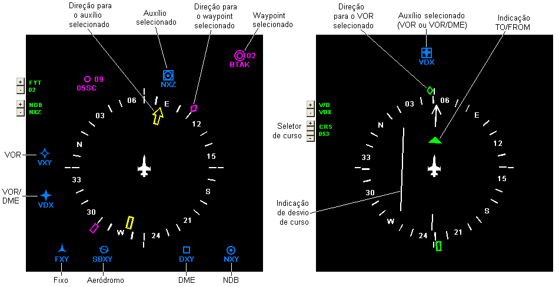
O waypoint
selecionado ("fly-to") é
apresentado abaixo do modo de deslocamento e possui dois
botões:  para
selecionar o próximo waypoint e
para
selecionar o próximo waypoint e  para selecionar o waypoint anterior.
O
waypoint
selecionado é apresentado como um círculo duplo no TSD, com uma seta
magenta apontando para direção do waypoint.
Informações
de navegação são apresentadas no canto inferior direito do HUD (proa,
número do waypoint, distância e tempo).
para selecionar o waypoint anterior.
O
waypoint
selecionado é apresentado como um círculo duplo no TSD, com uma seta
magenta apontando para direção do waypoint.
Informações
de navegação são apresentadas no canto inferior direito do HUD (proa,
número do waypoint, distância e tempo).
O auxílio
selecionado ("nav") é
apresentado abaixo do "fly-to" e possui dois
botões:  para
selecionar o próximo auxílio e
para
selecionar o próximo auxílio e  para selecionar o
auxílio anterior.
O
auxílio
selecionado
é apresentado com um quadrado sobreposto ao símbolo do auxílio no TSD e
as informações
de navegação são apresentadas no canto inferior direito do HUD (proa e
distância). No caso de auxílios do tipo NDB, Fixo e
aeródromo, uma seta amarela indicará a direção para o auxílio
selecionado. No caso de auxílios do
tipo VOR e VOR/DME, o seletor de
curso será habilitado logo abaixo do seletor de auxílio. Os botões
aumentam o curso em 10 ou 1 grau e os botões diminuem o
curso em 1 ou 10 graus.
Uma seta verde indicará a direção para o auxílio selecionado, outra
seta verde (interna) indicará a condição "TO" / "FROM", uma
seta
branca indicará o curso selecionado e uma barra branca indicará o
desvio de curso à esquerda ou à direita (10 graus para cada lado).
para selecionar o
auxílio anterior.
O
auxílio
selecionado
é apresentado com um quadrado sobreposto ao símbolo do auxílio no TSD e
as informações
de navegação são apresentadas no canto inferior direito do HUD (proa e
distância). No caso de auxílios do tipo NDB, Fixo e
aeródromo, uma seta amarela indicará a direção para o auxílio
selecionado. No caso de auxílios do
tipo VOR e VOR/DME, o seletor de
curso será habilitado logo abaixo do seletor de auxílio. Os botões
aumentam o curso em 10 ou 1 grau e os botões diminuem o
curso em 1 ou 10 graus.
Uma seta verde indicará a direção para o auxílio selecionado, outra
seta verde (interna) indicará a condição "TO" / "FROM", uma
seta
branca indicará o curso selecionado e uma barra branca indicará o
desvio de curso à esquerda ou à direita (10 graus para cada lado).
Sair
Para sair da
ferramenta e manter alterações realizadas, clique no botão
“OK” e confirme.
A configurações de visualização serão mantidas durante a sessão do R_DAT (telas, declutter, rastro, escala, etc.). Ao reiniciar o R_DAT, as configurações de visualização retornam para o default.
| |
Visualizar
dados em tabela |
Processamento de dados |  |